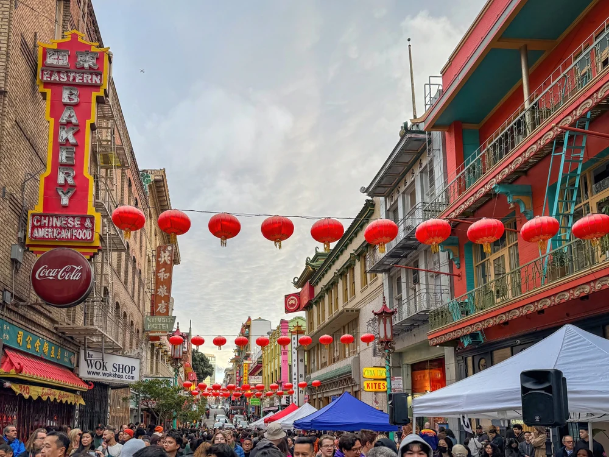
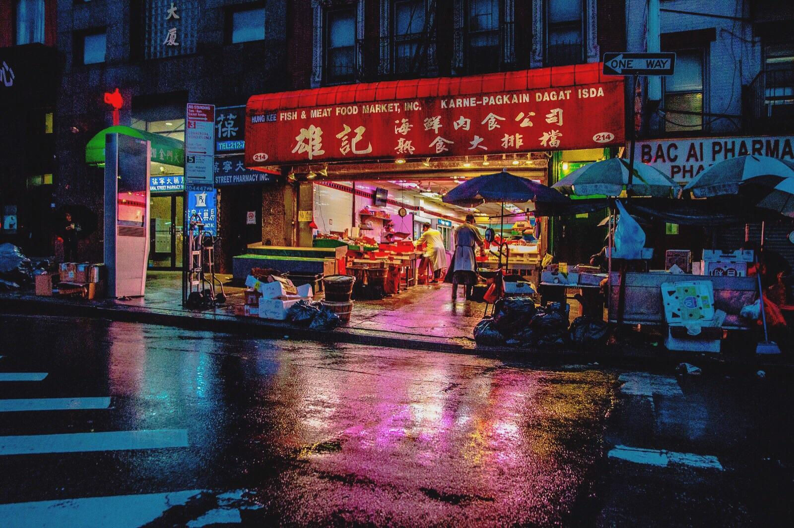

The grind, the burnout, and the ones who keep this city alive.
There is no resting in Chinatown. People wake up every day, readying their stalls in the fish market with smells of fish that mix with the steamed buns and scratchy metal gates that store owners open so early in the morning. The streets become packed with families hustling, readying their stores, kids running to school trying to make it just in time and tourists attempting to take photos of all the things they've never seen.
From the outside, the streets look lively and exciting at first, until you take a closer look, seeing the tired faces worn out grandmas, and burnt out students. The more you stare, the more Chinatown looks like a man who's lost his way in life.

Fish markets and storefronts opening before sunrise
For many people here this constant pressure isn't a choice, it's survival. Families open restaurants at dawn and close after midnight. They still have to clean the shop and prepare for the next day in an infinite sleepless cycle. The kitchens are filled with steam from cooking non-stop, with sweat beading from the foreheads of chefs and waiters alike.
Parents work while their children study and take orders at the cash register, relentlessly keeping on the pressure of time. The idea of slowing down and catching a break is impossible. While stopping feels like a waste of time and would force you to fall behind. In the city that never sleeps, the bare minimum is moving forward.
"In the city that never sleeps, the bare minimum is moving forward."
All that progress comes at a price. The city that never rests has a disease that slowly infects everyone. The effects of burnout have been felt by everybody. The people who keep the city are prime examples. Garbage men with long tired faces picking up our trash at 6 a.m. Delivery drivers riding through the rain, eyelids heavy as they push through their sleepless nights. Teachers grading essays at 3am pushing through the exhaustion just to meet their deadlines.
You can also see it in the students falling asleep in class and in the subways, attempting to balance school work, life, and family time all at once. The city praises people for their hard work, but forgets how much all of this progress costs. The city shows what happens when the drive to survive turns into an exhaustion that never goes away.

Delivery workers waiting on bikes, another order on the way